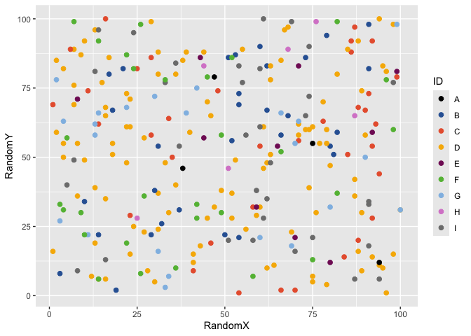
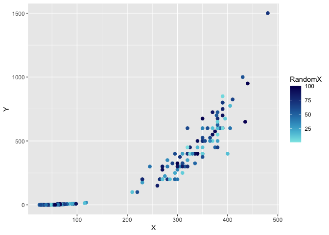

Introduction
poispalette is an R package that facilitates the use of Poisson Consulting colour palettes in data plots and maps.
Installation
To install the latest development version from GitHub
# install.packages("remotes")
remotes::install_github("poissonconsulting/poispalette")Demonstration
Retrieve Poisson colours and palettes
library(poispalette)
pois_pal("discrete")
#> black blue red yellow purple green light blue
#> "#000000" "#3063A3" "#E8613C" "#F7B500" "#821C65" "#63BB42" "#90BDE5"
#> orchid grey
#> "#D888CF" "#7D7D7D"
pois_cols(c("red", "yellow"))
#> red yellow
#> "#E8613C" "#F7B500"Plot discrete scales
library(ggplot2)
ggplot2::ggplot(poispalette::points, aes(x = RandomX, y = RandomY)) +
geom_point(aes(colour = ID), size = 2) +
scale_colour_disc_poisson()
Plot gradient scales
ggplot2::ggplot(poispalette::points, aes(x = X, y = Y)) +
geom_point(aes(colour = RandomX), size = 2) +
scale_colour_grad_poisson(palette = "cool")
Code of Conduct
Please note that the poispalette project is released with a Contributor Code of Conduct. By contributing to this project, you agree to abide by its terms.